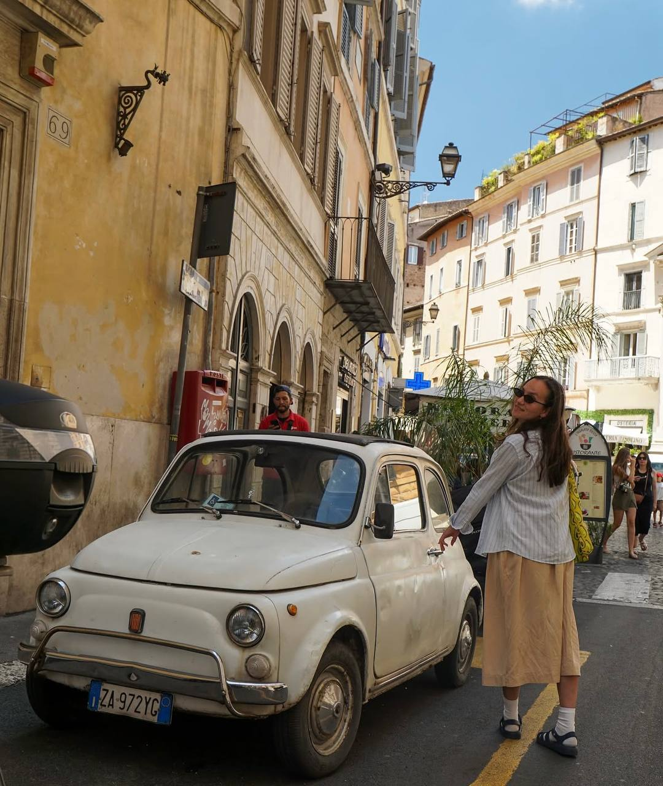

Travel story
Scooters, Laundry, and the Hill Above Naples

Naples is loud as hell.
Not in the way a concert is loud, or the way a crowded restaurant gets loud after a few glasses of wine. Naples is loud in a way that makes you feel like the entire city is having an argument and somehow, impossibly, everyone is winning.
Scooters scream around corners that seem far too narrow for cars, let alone anything with an engine. Drivers lean on their horns like they're trying to communicate the entire history of their family through a single sustained note. People shout greetings from opposite sides of the street, shopkeepers call out to passersby, and somewhere above it all, a woman is leaning out of a third-story window to yell something that I can only assume is very important.
I have no idea what she said.
I have no idea what half the city is saying, actually, but I have learned that a raised voice doesn't necessarily mean someone is angry. Sometimes they're just ordering coffee. Sometimes they're talking to their cousin. Sometimes they're yelling at a scooter that has somehow parked directly in the middle of a sidewalk.
Honestly, fair.
I spent the first part of the day trying to figure out how Naples works. I quickly discovered that this is a ridiculous thing to attempt. There are rules, presumably, but they seem to exist mostly as suggestions, and the only way to understand the rhythm of the city is to step into it and hope you don't get run over by a man delivering six boxes of something on the back of a Vespa.
Walking here is less of a peaceful activity and more of a full-body commitment. You learn to look both ways, then look a third time, then question whether the direction you're facing even matters anymore. Sidewalks appear and disappear without warning. Streets turn into staircases. Staircases turn into alleys. Alleys open into little squares where old men sit in plastic chairs, smoking cigarettes and watching the world go by as if they've seen every possible version of human stupidity and are no longer surprised by any of it.
And then there is the laundry.
I don't think I've ever seen a city so willing to let its laundry become part of the architecture. Shirts, towels, bedsheets, and underwear hang from balconies and stretch across narrow gaps between buildings. They flutter above the streets like colorful flags announcing that someone, somewhere, has decided today is a perfectly good day to wash their entire wardrobe.
There is something wonderful about it.
In so many places, the everyday parts of life are hidden away. Laundry goes into a dryer. Trash disappears behind a door. People retreat into their homes and shut the world out. Here, the ordinary refuses to stay private. Someone's blue shirt hangs above a bakery. A white bedsheet catches the afternoon sun between two weathered apartment buildings. A pair of black trousers sways directly over a street where three scooters are arguing with a delivery truck.
Naples doesn't seem particularly interested in looking polished for anyone. It is too busy being lived in.
The buildings are chipped and sun-worn, the streets are crowded, and there is often something happening in every direction. A tiny shrine sits in a wall between two shops. A dog sleeps in the shade of a parked car. A man carries a bag of groceries up a staircase while talking on the phone. Somewhere, someone is making espresso. Somewhere else, someone is making a scene.
And somehow, it all works.
Or maybe it doesn't work at all, and everyone has simply agreed to keep going regardless.
By the afternoon, I decided I needed to get above it all.
Naples has a way of making you feel as though you're always in the middle of something. Even when you're standing still, the city seems to move around you. I wanted a little distance, a chance to see the place without being swallowed by it, so I started climbing.
I should clarify that when I say climbing, I mean walking uphill long enough to begin questioning several of my life choices.
The streets grew steeper. The steps seemed to multiply. My legs started negotiating terms with the rest of my body, and my water bottle became the most important object I owned. Every time I thought I had reached the top, another staircase appeared, usually at an angle that suggested the person who designed it had a personal grudge against pedestrians.
I kept going anyway.
Partly because I wanted the view, and partly because turning around would have meant admitting that a hill had beaten me.
Eventually, I reached a point where the buildings opened up and the city spread out below me.
And, holy shit.
Naples from above is a different kind of beautiful.
From the streets, the city can feel chaotic, even overwhelming. Everything is close together. Buildings press against one another, scooters squeeze through impossible gaps, and every corner seems to reveal another shop, another café, another person trying to get somewhere before someone else gets in the way.
From the hill, the chaos becomes a pattern.
Terracotta rooftops tumble toward the water. Cream-colored buildings catch the afternoon light. Narrow streets disappear into dense neighborhoods, and balconies stretch across façades like tiny stages where daily life plays out. The Bay of Naples opens beyond the city, blue and expansive, with the outline of Mount Vesuvius rising in the distance.
It is almost difficult to reconcile the view with the streets below.
Down there, I had been trying to keep up. Up here, I could finally see how much there was to take in.
I stood for a long time, watching the light change across the water. The city sounded quieter from this distance, though not silent. Naples doesn't strike me as the sort of place that ever truly goes quiet. The noise was still there, somewhere beneath me, carried upward in fragments. A horn. A voice. The faint hum of traffic. Life continuing exactly as it had before I arrived and exactly as it would after I left.
I thought about how strange it is to visit a place for only a few days and try to understand it. You arrive with expectations, photographs you've seen, recommendations from people who swear they know the best neighborhood or the best restaurant or the one street you absolutely cannot miss.
Then you get there, and the city refuses to be what you expected.
Naples was supposed to be a stop on a trip. A place to see, to photograph, to remember. But somewhere between dodging scooters and watching laundry flap overhead, it started feeling less like a collection of attractions and more like a place with its own stubborn personality.
It doesn't seem to care whether you understand it.
It doesn't pause to make itself convenient. It doesn't apologize for being messy. It doesn't rearrange its streets so that you can get a better photograph. The people who live here still have errands to run, dinners to cook, laundry to hang, and arguments to finish. The city carries on whether you're watching or not.
And maybe that's the best thing about it.
There is a particular kind of travel experience that comes from visiting somewhere beautiful and immediately wanting to preserve it. You take the photograph, write down the name of the restaurant, save the location of the viewpoint, and promise yourself you'll remember every detail.
But I think the moments that stay with me longest are often the ones I couldn't have planned.
The scooter that appeared from absolutely nowhere. The old man who looked at me like I was an idiot for standing in the middle of the pavement. The sheets drying between buildings. The staircase I nearly gave up on. The view that made the entire climb feel worth it.
None of these things would make a particularly impressive itinerary.
Together, they made Naples feel real.
I eventually made my way back down the hill, which was significantly easier on my lungs and significantly harder on my knees. The city met me at the bottom with its usual enthusiasm. A scooter buzzed past. Someone shouted across the street. A shopkeeper rearranged something in a doorway. The smell of food drifted out of a restaurant, and I immediately realized I was hungry enough to eat just about anything put in front of me.
The noise hadn't changed. The streets hadn't become less confusing. The laundry was still hanging overhead.
But I felt different walking through it.
I had stopped trying to make Naples make sense.
Instead, I let it be loud. I let it be crowded. I let it be imperfect and beautiful and occasionally fucking exhausting. I let the streets take me where they went, even when I wasn't entirely sure where that was.
And for the first time that day, I wasn't in a hurry to get anywhere.
Maybe that's what the hill gave me. Not just a view of Naples, but a little perspective on the whole damn thing.
Cities aren't always meant to be understood in a single visit. Sometimes you get a glimpse of them, a handful of memories, a sore pair of legs, and a story about the time you nearly got taken out by a scooter.
Sometimes that's enough.
And sometimes, standing above a city with the sea stretching out in front of you and the whole noisy, complicated world carrying on below, you realize that you don't need everything to be neat and organized and easy to navigate.
You just need to be there.
Naples, you chaotic bastard. I think I'm going to miss you.